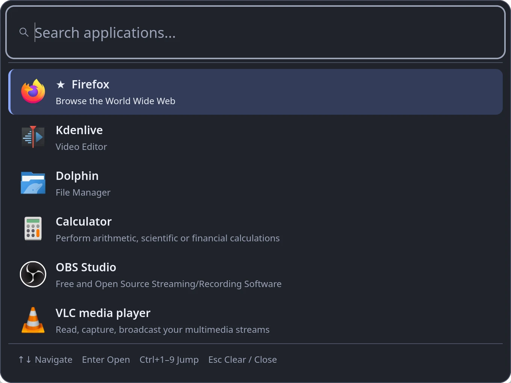
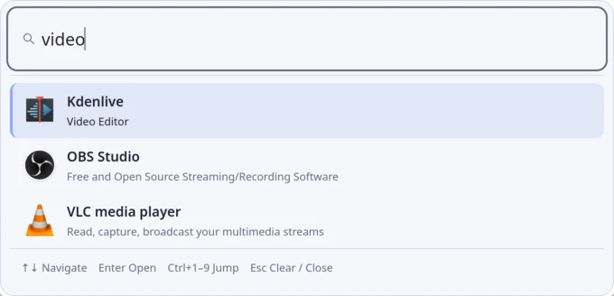
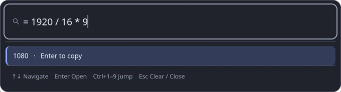

Forgiving search
Prefix, word-start, acronym and fuzzy matching across names, keywords and
descriptions. vsc finds Visual Studio Code.
Luma Launcher is a fast, private search palette for Linux. Press a shortcut, type a few letters and press Enter to open an app, do a quick sum or search the web, without reaching for the mouse.

Luma stays resident, so it appears instantly and finds the right app from a few letters.
Prefix, word-start, acronym and fuzzy matching across names, keywords and
descriptions. vsc finds Visual Studio Code.
Pin favorites with Ctrl D. The apps you open most and most recently rank higher, while exact matches always win.
Optionally ranks apps by GNOME's or KDE's own usage records, so it is useful from the first day. It only ever reads them.
GNOME and KDE
Type = 1920 / 16 * 9 and press Enter to copy 1080. Powers,
200 + 15%, sqrt(), pi and
= 255 in hex work too. Nothing is ever executed.
g or ddg searches the web, and you can add your own, such as
gh for GitHub. Addresses like localhost:3000 open
directly.
Ctrl Enter lists an app's own actions, such as a new private window, straight from its desktop entry.
Arrows or Ctrl J/K to move, Ctrl 1–9 to open, Ctrl , for Settings and Esc to close.
Native GTK4 with apps and icons from GIO. Dark, light or system theme, accent colour, width, font size and a compact layout.
Wayland and X11Follow your desktop's colour preference, or pick one in Settings.


| Platform | Status |
|---|---|
| Debian 13+ and Ubuntu 24.04+ (amd64) | Signed APT repository below, including derivatives such as Linux Mint 22. Tested on KDE Plasma under Wayland. GNOME and X11 sessions are supported but not yet verified by the maintainer. |
| Older releases (Debian 12, Ubuntu 22.04) | Build from source; the packaged libraries are too new for them. |
| Windows (x64) | Preview. A native .NET 10 app with a similar palette, built from source. See the README for details. |
| macOS | Not yet. |
Add the signed repository once and APT keeps Luma Launcher updated with your other packages. Verify the signing key before you trust it.
sudo apt update
sudo apt install ca-certificates curl gnupg
The fingerprint printed by gpg must be exactly this. Also compare it
with the one in the
README on GitHub.
82A6 ED17 14A6 C92E FEFA 712A 1836 6AD3 BA2B FAAC
curl -fsSLo /tmp/luma-launcher.asc \
https://mikeholp87.github.io/Luma-Launcher/apt/luma-launcher.asc
gpg --show-keys --with-fingerprint /tmp/luma-launcher.ascsudo install -D -m 0644 /tmp/luma-launcher.asc \
/etc/apt/keyrings/luma-launcher.asc
echo 'deb [signed-by=/etc/apt/keyrings/luma-launcher.asc] https://mikeholp87.github.io/Luma-Launcher/apt/ ./' \
| sudo tee /etc/apt/sources.list.d/luma-launcher.list >/dev/nullsudo apt update
sudo apt install luma-launcher
Start Luma from the application menu once, then bind Alt
Space (or any free shortcut) to luma-launcher --toggle: on
KDE in System Settings → Keyboard → Shortcuts, on GNOME in Settings → Keyboard →
Custom Shortcuts.
Update later with sudo apt update && sudo apt upgrade. Remove
with sudo apt remove luma-launcher; your settings are kept. Prefer a
single file? Download the .deb and its SHA-256 checksum from
GitHub Releases.
Launch history stays on your machine, and you can turn it off or clear it at any time. Luma does not phone home.
Icons come from your installed themes, never downloaded. The network is only used when you choose to open a web search or link in your browser.
MIT licensed source on GitHub, and a signed APT repository you can verify yourself.
No. There is no telemetry and it works fully offline. Web searches and links open in your own browser only when you choose them.
Your desktop owns global shortcuts, so Luma never claims one by itself. Bind
luma-launcher --toggle in your desktop's keyboard settings. Alt+Space is
often already used for the window menu; reassign it there or pick another shortcut.
Only if “system app usage” is on. Luma then reads GNOME Shell's application state or KDE's activity statistics read-only to rank apps, and never writes to them. Ctrl Delete drops an app from that ranking.
In ~/.config/luma-launcher and ~/.local/state/luma-launcher.
Removing the package leaves them in place.
Open an issue on GitHub. Read the security notes for how Luma handles launching and your data.